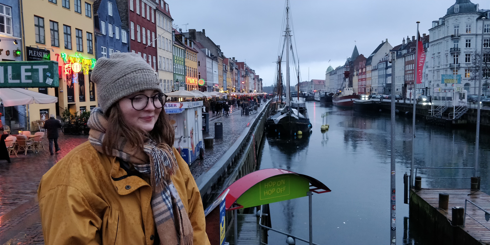

Johdanto
Hei! Minä olen Vivian. Tämän sivuston tarkoituksena on luoda yleinen käsitys siitä, kuka olen sekä mitä toivon tulevaisuudeltani tavoitteideni ja taitojeni kautta. Olen 25-vuotias ja olen kotoisin Helsingistä. Opiskelen Haaga-Helian ammattikorkeakoulussa tradenomiksi.
